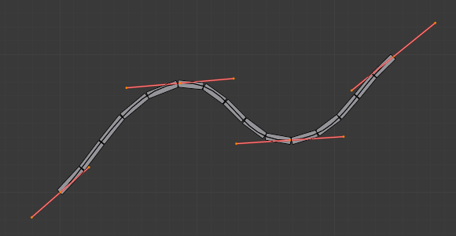
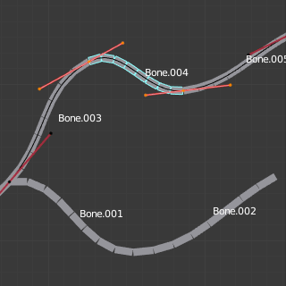
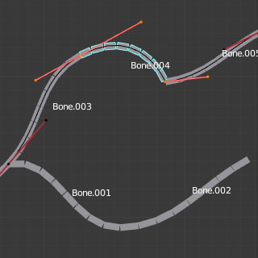

软骨骼¶
参考
| 模式: | 所有模式 |
|---|---|
| 面板: |
Bendy Bones（B-Bones）是一种简单的方法取代许多小型刚性骨骼长链的方法。弯曲骨骼的常见用于脊柱模型或面部骨骼。
Technical Details 技术细节¶
Blender将骨骼看成通过骨骼关节的贝塞尔曲线的一部分. 每个 段数 将弯曲并滚动以遵循这无形贝塞尔曲线代表此的曲线细分点。曲线两端的控制点是骨骼的端点。样条骨（B-bones）的形状可以是受控制使用一系列的属性或间接邻近的骨骼(即第一个子级和父级). 骨骼的两端的特征构成手柄以控制曲率。
当使用 B-bone 作为约束目标 数据ID 提供跟随曲线的选项。
Note
However, if the bone is used as a target rather than to deform geometry, only Armature and Copy Transforms constraints will use the full transformation including roll and scale.
Display 显示¶
只有骨骼可视化模式为 样条骨（B-bones） 才能看到这些段数。
当显示方式不是 样条骨（B-bones） 时, 骨骼总是显示为刚性棍形，即使骨骼段数仍然存在并且有效。 这意味着即使在例如 八面体 可视化的显示方式，如果链中的一些骨头有几段， 他们仍然会使他们的几何体平滑变形...
Rest Pose 重置姿势¶
样条骨（B-bones）的初始形状可以在编辑模式中定义为该骨骼的重置姿势。这对弯曲的面部特征（如弯曲的眉毛或嘴巴）很有用。
样条骨（B-bones）有两套Bendy Bone（软骨骼、弯曲骨骼）属性 - 一个用于编辑模式（即重置姿势/基础绑定Base Rig），另一个用于姿势模式 - 将它们的值相加，以获得最终的变换。
Example 示例¶

Bones with just one segment in Edit Mode. |

贝塞尔曲线叠加在链上，其手柄放置在骨骼的两端。 |

相同的骨架在物体模式。 |
在图 Bones with just one segment in Edit Mode. 我们连接了三个骨骼，每个骨骼由五段组成。
看图。 相同的骨架在物体模式。 ，我们可以看到骨骼的细分如何平滑地“融合”到彼此，即使是产生了滚动。

骨骼在姿态模式下，骨骼可视化： Bone.003有一段，Bone.004有四段，Bone.005有十六段。
Options 选项¶
Segments 段数¶
The Segments number field allows you to set the number of segments, which the given bone is subdivided into. Segments are small, rigid linked child bones that interpolate between the root and the tip. The higher this setting, the smoother "bends" the bone, but the heavier the pose calculations.
Curve XY Offsets 曲线XY偏移¶
在垂直于骨骼的主（Y）轴的平面上施加曲线柄位置的偏移量。结果，手柄从原始位置每个轴向 (XY)进一步移动，使得曲线弯曲。
Roll 扭转¶
- Roll In, Out 扭转输入， 扭转输出
- 扭转值 (或围绕骨骼的主Y轴扭转)在每个段内插入起始和终止之间的扭转值。它应用旋转偏移给先前旋转的顶部。
- Inherit End Roll 继承尾端扭转
- If enabled, the Roll Out value of the Start Handle bone (connected parent by default) will be implicitly added to the Roll In setting of the current bone.
Scale 缩放¶
- Scale In X/Y, Scale Out X/Y
- Scaling factor that adjusts the thickness of each segment for the X and Y axes only, i.e. length (Z axis) is not affected. Similar to Roll it is interpolated per segment.
Easing¶
- Ease In, Out
The Ease In/Out number fields, change the "length" of the "auto" Bézier handle to control the "root handle" and "tip handle" of the bone, respectively.
这些值与默认长度成正比，当然这取决于骨骼长度，手柄参考角度等自动变化的过程。

Bone.004 with default In and Out (1.0). |

Bone.004 with In at 2.0, and Out at 0.0. |
{kind=link}
{kind=link}
Custom Handles¶
B-Bones can use custom bones as their reference bone handles, instead of only using the connected parent/child bones.
- Start, End Handle Type
Specifies the type of the handle from the following choices:
- Automatic
- The connected parent (or first connected child) of the bone is chosen as the handle. Calculations are done according to the Absolute handle type below.
- Absolute
- The Bézier handle is controlled by the position of the head (tail) of the handle bone relative to the head (tail) of the current bone. If the handle is also a B-Bone, additional processing is applied to further smooth the transition, assuming that the bones in effect form a chain.
- Relative 相对
- The Bézier handle is controlled by the offset of the head (tail) of the handle bone from its rest pose. The use of this type is not recommended due to numerical stability issues near zero offset.
- Tangent
- The Bézier handle is controlled by the orientation of the handle bone, independent of its location.
- Custom Handle
For types other than Automatic, a bone to use as handle has to be manually selected. Switching to a custom handle type without selecting a bone can be used to effectively disable the handle.
It is valid for two bones to refer to each other as handles -- this correlation is applied in connected chains with Automatic handles.
Tip
Keying Set
“BBone Shape”键控设置包括所有Bendy Bones属性。
Example 示例¶

Bendy Bones属性的可视化。